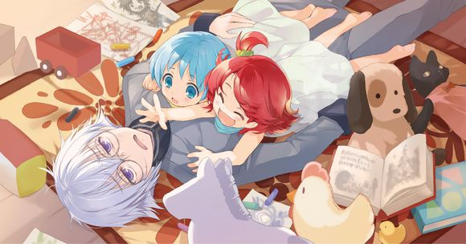

剧情简介

“末日时在做什么？有没有空？可以来拯救吗？”
就如标题所言，这是一部末日系小说，本作时间设定在人类世界毁灭之后的“末日”，而故事的舞台则是一个上有神明，下有人、龙、兽等不同种族的标准幻想世界。作品以人类灭亡后五百年的世界为舞台，妖精少女们与人类青年共同经历的日子。
人类灭亡了——500年前，被人类制造出的“17兽”的怪物失控反而被兽消灭，其它种族后来逃离大地，生活在浮空岛上。
在世界毁灭前，人类的建立的勇者体系和量产化的圣剑令人类站在这个异世界的巅峰，他们四处讨伐，灭除那些会对人类造成危害的其他种族。但就是这样强大的人类几乎却在地面上出现正体不明且力量强大的“兽”之后仅仅几天就惨遭灭亡。
而其他的种族也未能幸免，“兽”群占据了大地，原先的世界自此毁灭。残存的种族在“大贤者”的帮助下逃到了由众多悬浮岛屿组成的空中大陆上，并在那里建立起了新的家园。在500年后，冒着生命危险降落到地面上发掘资源的探险队意外发现了因为石化而从“兽”手中死里逃生的男主角，并将他带回了悬浮大陆。
男主在500年前，并非真正的勇者，而只是被称为“准勇者”的半吊子存在。究其原因，在于男主并没有遇到能够成为勇者的“命运”。勇者世家出身，家人被杀，村庄被毁，国家被灭亡。投靠隐士，学习传说中的剑术。这是能够成为勇者的条件，是男主在人类灭亡之前始终没有遇到过的事情。成为勇者是极其幸运的事，也是极其悲哀的事。
如今的世界是兽人为主，没有獠牙和长角的种族则被称为无征种，遭到歧视。在这种悲惨的大环境之下，男主角的新工作是管理特殊兵器——一群黄金妖精！
随着男主了解进一步加深，才知道原来即使流亡到了浮空大陆上，仍面临着灭绝的危机，“第六兽”会随风飘到岛屿上，而那些“兽”只会毁灭眼前所见到的一切。能抗衡的“兽”的只有人类所制造的“圣剑”，但“圣剑”本身是为人类所创造的，只有人类能使用。在这个人类早已灭绝的世界，其他种族找到了办法：找到和人类相似的种族，用生命作为使用圣剑的代价去抗衡“兽”。
除了失去昔日力量的男主外，只有军方仓库中被称为“兵器”的那些少女可以使用。所以，真身为“妖精”的少女们，就像当年的人类勇者一样，背负着拯救他人的宿命，一次又一次地踏上战场，直至最后燃尽生命。而男主，只能在“妖精仓库”中默默祈求着她们的平安归来。
世界濒临灭亡、无力的男主、背负宿命战斗的女主角……本作有很大程度区别在于本作故事不是聚焦在“战斗”上，反而把主要篇幅都交给了日常故事。全书中，没有惊天动地的战斗描写，只有“妖精仓库”中略带慵懒而又温暖的点滴日常。花了大量笔墨，描写少女们面对终将死亡。